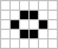

Programmation, Développement
Initiation
Le programme
- The boring theory
- The funny part
The boring theory
- La programmation
- La mémoire
- La donnée
- Les traitements
La programmation
L'écriture, dans un langage de programmation donné, d'intructions qui seront transformés en éxécutable.
Le code
// Explain and guide beginners
function programmationInitiation(attendees) {
explainProgrammationTo(attendees);
explainExerciseTo(attendees);
attendees.forEach(function (attendee) {
if (isBlocked(attendee)) {
tryToHelp(attendee);
}
});
}
function add(a, b) {
return a + b
}
Rendre le code exécutable
- La compilation
- L'interprétation
L'éxécutable
La big data
Les variables
var age;
var age = 20;
var age = age + 1;
Les types de données
- Les nombre
var age = 30; - Les chaînes de caractères (strings)
var prenom = "Maxime"; - Les booléen
var alive = true; var dead = false; - Nombres entier, nombres à décimaux, caractères, ...
Organiser ses données
- Les tableaux / listes
var enfants = ["Elodie", "Maxime", "Amandine"]; var enfant = enfants[0]; - Les dictionnaires
var enfants = { "aine": "Elodie", "cadet": "Maxime", "benjamin": "Amandine" }; var nomDuCadet = enfants.cadet; - Ensembles, listes chainées, objects, ...
Les opérateurs
- Numériques
var quatre = (3 * 3) / 3 + 2 - 1; var positif = entier >= 0; - Booléens
var vrai = true; var faux = !vrai; vrai == true; vrai != faux; vrai && faux; vrai || faux; - String
var prenom = "Maxime"; var phrase = "Je suis " + prenom;
Les structures de contrôle
Conditionelle : if
if (maxime.age > 30) {
return "oh, le vieux !!";
} else {
return "ça va encore.";
}
Les structures de contrôle
Les boucles : for, while, ...
var enfants = ["Elodie", "Maxime", "Amandine"];
var nombreDEnfants = 0
for (var index = 0; index < enfants.length; index++) {
nombreDEnfants = nombreDEnfants + 1;
}
Organiser tout ça
Les fonctions
// Déclaration
function addition(a, b) {
var c = a + b
return c;
}
// Usage
var trente = addition(20, 10);
L'exercice
Le jeu de la vie
Le jeu de la vie

Le jeu de la vie
Les règles
- Une cellule morte ayant 3 voisines vivantes devient vivante (reproduction)
- Une cellule vivante ayant moins de 2 voisines meure (sous-population)
- Une cellule vivante ayant plus de 3 voisines vivantes meure (sur-population)
Le jeu de la vie
Les règles
| État avant | Voisines | État après |
|---|---|---|
| Vivante | 2 ou 3 | Vivante |
| Morte | 3 | Vivante |
| Vivante | ≦1 | Morte |
| Vivante | ≧4 | Morte |
Le jeu de la vie
quelques exemples :



Le jeu de la vie
quelques exemples :

Le jeu de la vie
Comment représenter la grille ?
Une liste de listes
var liste = [1, 2, 3, 4];
var listeDeListes = [[1, 2, 3], [4, 5, 6], [7, 8, 9]]
// true = cellule vivante, false = cellule morte
var grid = [
[true, false, true],
[false, true, false],
[true, false, true],
];
Le jeu de la vie
à vous
https://stackblitz.com/edit/initiation-progFaites un "fork" svp
https://jsconsole.com/index.js
function nextGen(grid) {
return grid;
}
function loop(grid) {
var grid = nextGen(grid);
display(grid);
setTimeout(() => loop(grid), 1000)
}
var initialtState = [
[false, true, false],
[false, true, false],
[false, true, false]
];
loop(initialtState);
Étape 1 : parcourir les cellules
> var grid = [
[false, true, false],
[false, true, false],
[false, true, false]
];
> grid.map(
(line, y) => line.map(
(cell, x) => x + ', ' + y
)
);
function nextGen(grid) {
return grid.map(
(line) => line.map(
(cell) => !cell
)
);
}
Étape 2 : Naissance d'une cellule
Si une cellule a exactement trois voisines vivantes, elle devient vivante
function nextGen(grid) {
return grid.map(
(line, y) => line.map(
(cell, x) => aliveNeighbors(grid, x, y) == 3
)
);
}
Étape 2.1 : Compter les voisines vivantes
> var grid = [
[false, true, false],
[false, true, false],
[false, true, false]
];
Étape 2.1.1 : Identifier une cellule
var grid = [
[false, true, false],
[false, true, false],
[false, true, false]
];
> var x = 1;
> var y = 1;
> grid[y][x]; // true
> x = 0;
> grid[y][x]; // false
Étape 2.1.2 : Identifier ses voisines
grid[1][1];
(0, 0) (1, 0) (2, 0)
(0, 1) (1, 1) (2, 1)
(0, 2) (1, 2) (2, 2)
grid[y][x];
(x-1, y-1) (x, y-1) (x+1, y-1)
(x-1, y) (x, y) (x+1, y)
(x-1, y+1) (x, y+1) (x+1, y+1)
Étape 2.1.2 : Identifier ses voisines
function listNeighbors(x, y) {
return [
{x: x-1, y: y-1}, {x: x, y: y-1}, {x: x+1, y: y-1},
{x: x-1, y: y}, {x: x+1, y: y},
{x: x-1, y: y+1}, {x: x, y: y+1}, {x: x+1, y: y+1}
];
}
> listNeighbors(1, 1)
Étape 2.1.3 : les bords du monde
var grid = [
[false, true, false],
[false, true, false],
[false, true, false]
];
// Les voisins de la cellule 2, 2 ?
(1, 1) (2, 1) (3, 1)
(1, 2) (2, 2) (3, 2)
(1, 3) (2, 3) (3, 3)
> listNeighbors(2, 2)
> grid[3][3] = ?
Étape 2.1.3 : les bords du monde
function isInboundaries(grid, coord) {
var width = grid[0].length;
var height = grid.length;
return coord.y >= 0 && coord.y < height && coord.x >= 0 && coord.x < width;
}
> isInboundaries(grid, {x: 1, y: 3})
neighbors.filter((coord) => isInboundaries(grid, coord))
Étape 2.1.4 : Compter les cellules vivantes
var neighbors = [
[false, true, false],
[false, true, false],
[false, true, false]
];
// Combien de true ?
Étape 2.1.4 : Compter les cellules vivantes
var neighbors = [
[false, true, false],
[false, true, false],
[false, true, false]
];
var aliveNeighbors = neighbors.filter((cell) => cell == true).length
Étape 2.1 : Compter les voisines vivantes
function aliveNeighbors(grid, x, y) {
return listNeighbors(x, y)
.filter((coord) => isInboundaries(grid, coord))
.map((coord) => grid[coord.y][coord.x])
.filter((cell) => cell)
.length
}
Étape 2 : Naissance d'une cellule
Si une cellule a exactement trois voisines vivantes, elle devient vivante.
function nextGen(grid) {
return grid.map(
(line, y) => line.map(
(cell, x) => aliveNeighbors(grid, x, y) == 3
)
);
}
Étape 3 : Rien ne bouge
Si une cellule a exactement deux voisines vivantes, elle reste dans son état actuel.
function nextGen(grid) {
return grid.map(
(line, y) => line.map(
(cell, x) => {
if (aliveNeighbors(grid, x, y) == 3) {
return true;
}
if (aliveNeighbors(grid, x, y) == 2) {
return cell;
}
}
)
);
}
Étape 4 : Mort d'une cellule
Si une cellule a strictement moins de deux ou strictement plus de trois voisines vivantes, elle meure.
function nextGen(grid) {
return grid.map(
(line, y) => line.map(
(cell, x) => {
if (aliveNeighbors(grid, x, y) == 3) {
return true;
}
if (aliveNeighbors(grid, x, y) == 2) {
return cell;
}
if (aliveNeighbors(grid, x, y) < 2 || aliveNeighbors(grid, x, y) > 3) {
return false;
}
}
)
);
}
Étape 5 : Les structures
Essayez différentes structures : le planeur
var _ = false;
var O = true
var initialtState = [
[_, O, _, _, _, _, _, _, _, _, _, _, _, _, _, _, _, _],
[_, _, O, _, _, _, _, _, _, _, _, _, _, _, _, _, _, _],
[O, O, O, _, _, _, _, _, _, _, _, _, _, _, _, _, _, _],
[_, _, _, _, _, _, _, _, _, _, _, _, _, _, _, _, _, _],
[_, _, _, _, _, _, _, _, _, _, _, _, _, _, _, _, _, _],
[_, _, _, _, _, _, _, _, _, _, _, _, _, _, _, _, _, _],
[_, _, _, _, _, _, _, _, _, _, _, _, _, _, _, _, _, _],
[_, _, _, _, _, _, _, _, _, _, _, _, _, _, _, _, _, _],
[_, _, _, _, _, _, _, _, _, _, _, _, _, _, _, _, _, _],
[_, _, _, _, _, _, _, _, _, _, _, _, _, _, _, _, _, _],
[_, _, _, _, _, _, _, _, _, _, _, _, _, _, _, _, _, _],
[_, _, _, _, _, _, _, _, _, _, _, _, _, _, _, _, _, _],
[_, _, _, _, _, _, _, _, _, _, _, _, _, _, _, _, _, _]
];
Étape 5 : Les structures
Essayez différentes structures : le petit exploreur
var initialtState = [
[_, _, _, _, _, _, _, _, _, _, _, _, _, _, _, _, _, _],
[_, _, _, _, _, _, _, _, _, _, _, _, _, _, _, _, _, _],
[_, _, _, _, _, _, _, _, _, _, _, _, _, _, _, _, _, _],
[_, _, _, _, _, _, _, _, _, _, _, _, _, _, _, _, _, _],
[_, _, _, _, _, _, _, _, O, _, _, _, _, _, _, _, _, _],
[_, _, _, _, _, _, _, O, O, O, _, _, _, _, _, _, _, _],
[_, _, _, _, _, _, _, O, _, O, _, _, _, _, _, _, _, _],
[_, _, _, _, _, _, _, _, O, _, _, _, _, _, _, _, _, _],
[_, _, _, _, _, _, _, _, _, _, _, _, _, _, _, _, _, _],
[_, _, _, _, _, _, _, _, _, _, _, _, _, _, _, _, _, _],
[_, _, _, _, _, _, _, _, _, _, _, _, _, _, _, _, _, _],
[_, _, _, _, _, _, _, _, _, _, _, _, _, _, _, _, _, _],
[_, _, _, _, _, _, _, _, _, _, _, _, _, _, _, _, _, _]
];
Étape 5 : Les structures
Essayez différentes structures : Ligne de 10 cellules
var initialtState = [
[_, _, _, _, _, _, _, _, _, _, _, _, _, _, _, _, _, _],
[_, _, _, _, _, _, _, _, _, _, _, _, _, _, _, _, _, _],
[_, _, _, _, _, _, _, _, _, _, _, _, _, _, _, _, _, _],
[_, _, _, _, _, _, _, _, _, _, _, _, _, _, _, _, _, _],
[_, _, _, _, _, _, _, _, _, _, _, _, _, _, _, _, _, _],
[_, _, _, _, _, _, _, _, _, _, _, _, _, _, _, _, _, _],
[_, _, _, _, O, O, O, O, O, O, O, O, O, O, _, _, _, _],
[_, _, _, _, _, _, _, _, _, _, _, _, _, _, _, _, _, _],
[_, _, _, _, _, _, _, _, _, _, _, _, _, _, _, _, _, _],
[_, _, _, _, _, _, _, _, _, _, _, _, _, _, _, _, _, _],
[_, _, _, _, _, _, _, _, _, _, _, _, _, _, _, _, _, _],
[_, _, _, _, _, _, _, _, _, _, _, _, _, _, _, _, _, _],
[_, _, _, _, _, _, _, _, _, _, _, _, _, _, _, _, _, _]
];